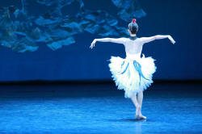

Functional grammar: experiential meanings

One central function of language is to picture reality to others.
Things, events and circumstances are encoded into language through
three types of constituents of clauses:
- Who or what?
- These are called the participants in a clause
- Did what?
- This is the pivot of the clause: the verbal process
- When, where, to what extent, as what? etc.
- These are the circumstances.
These three constituents of a clause are, naturally, intimately
connected but the core remains the Process: what happened, who did
what, who felt what? and so on.
One way to picture the relationship is:

At the core lie the Processes without which nothing else can be
said.
There are four main ways that these constituents can co-occur:
- We can have the simple Participant-Process clause such as
The dog barked
The house will be redecorated
I drank
etc. in which the only participant is what would be called the subject in other analyses. - We can combine that with a second Participant so we get,
e.g.:
The dog bit me
The house pleased her
I drank the beer
in which there are two participants, the subject and the direct object. - We can add a Circumstance to the first pattern and get,
e.g.:
The dog barked all night
The house will be redecorated by George
I drank in the garden - We can combine the Process with two Participants and a
Circumstance
The dog bit me in the arm
The house pleased her immensely
I drank the beer in the garden
It is possible for some verbs to take three processes in all so
we might have:
I gave the man the money on Thursday
It is also possible to for some clauses to project another clause
so we may encounter:
She told me that she loved the house
Mary said the dog was hungry
 |
Three Process types |
There is a much fuller guide to verbal processes linked at the end of this page. For now, it will be enough to exemplify the three major types and the two sub-categories in each:
- Doing processes
- Material:
The house caught fire - Behavioural:
Mary coughed
- Material:
- Projecting processes
- Mental:
She enjoyed the concert - Verbal:
She told me that she enjoyed the concert
- Mental:
- Being processes
- Existential:
There's a man at the door - Relational:
The house belongs to Mary
- Existential:
 |
Participants |
With each Process type come specific participant roles and we now turn to these.
With most Material processes we have Actors, Goals and Beneficiaries. Here are some examples of how they take on the roles of Participants with Material processes:
- Actors:
Mary left
Here, Mary is the sole Participant and she is the Actor but the Actor need not be a person so we can also have:
The house collapsed
and The house is the sole actor in this case. - Actors with Goals:
The child cooked the dinner
Here, the child is the Actor and the dinner is the Goal of the Process. - Goals with Actors
The dinner was cooked by the child
Here, the roles are reversed structurally but not functionally. The child is still the Actor and the Goal is still the dinner. - Goals without Actors
The dinner was cooked
Here, there is no actor (and it's worth asking why) but the dinner remains the Goal of the Process. - Actors with Beneficiaries
I cooked dinner for my sister
Here, we have an Actor (I), a Beneficiary (my sister) and a Goal (dinner). - Actors with Range
Fred climbed the tree
In which the tree is the Range, not a Goal or Beneficiary because it is unaffected by the process. Compare:
Fred pruned the tree
in which the tree is the Goal, not the Range because it is changed by the process.
With Behavioural Processes we have, unsurprisingly, a Behaver and something which is generally called the Range which is separate from the Behaver. Behavers are either conscious entities or a personification of something unconscious that is perceived as conscious metaphorically. For example:
- Behaver alone:
She wept
Only She is the Behaver here. - Behaver plus Circumstance:
My dog sleeps in his kennel
Here, My dog is the Behaver and in the kennel is a Circumstance - Behaver plus Range:
John criticised the film
in which the Behaver is John and the film is the Range. In some analyses, the Range may be called the Phenomenon.
With Mental Processes we also have an aptly named main Participant, the Senser. The other Participants of Mental processes are either Phenomena or Projected clauses. For example:
- Senser plus Phenomenon:
Mary understands the problem
Jane heard the man knocking at the door - Senser plus Projected clause:
Peter wondered why I was late
With Verbal Processes we have Sayers, Receivers, Projected clauses and Verbiage (what is said). For example:
- Sayer plus Verbiage:
Mary said her prayers - Sayer plus Projected clause:
They asked where I was going - Sayer plus Verbiage plus Receiver
She told the children a story
With Existential Processes, there is only one Participant: the
Existent. For example:
There is a shop on the corner
in which a shop is the Existent and on the corner
is a Circumstance.
Relational Processes are more complicated but usually, the main Participant is the Carrier and the Attribute. There is also a distinction between the Identifier and the Identified. For example:
- Carrier plus attribute
That is a new problem
in which That is the Carrier and a new problem is the Attribute. - Identified and
Identifiers.
My bedroom is the first door on the left
in which My bedroom is the Identified and the first door on the left is the Identifier. - We can reverse the process and have:
The first door on the left is my bedroom
in which the Identifier comes first and the Identified comes second.
|  |
Circumstances |
| Dancing alone on stage for hours |
There is, linked below, a separate guide to the area of
Circumstances. Here, therefore, we'll just summarise the area
briefly.
The usual way in which Circumstances are encoded in the language is
via a prepositional phrase or another kind of adverbial (including
simple adverbs).
Circumstances set the process in a context. For example:
- How long, far, many times?
- for a year
to the end of the road
in two kilometres - Where and when?
- in the bathroom
before dinner
at 6 o'clock - If what?
- if it rained
without good luck
in case she called - Why?
- to get better
since that was how it was
so it would be easier - With whom?
- alone
with his sister
without a friend - What about?
- about the war
on the meaning of life
concerning the letter - As what?
- as the captain
in the role of a colleague
being a friend - How?
- by bus
loudly
by post - What with?
- with a hammer
using a chair
with my help - What like?
- like a maniac
as if he were angry
as quick as a flash - According to whom?
- for John
according to her
to me
 |
Implications for learners and learning |
One of the problems with using a traditional grammar in
classrooms is that the learners have no way of knowing what sorts of
verbs go with which sorts of participants. You may explain to
learners, for example, that a verb such as arrive is
intransitive and one like tell is transitive but that does
not help people to form acceptable sentences in terms of the
communication of ideas.
Analysing experiential meanings in terms of the type of verbal
process allows a bit more precision because we can then see what
sorts of participants are involved.
For example:
- Material processes can have a simple Actor and neither Goal
nor Range (i.e., they are functioning intransitively) and form
an easily learned and duplicated set of simple sentences which
even beginner learners can handle with confidence.
They can have Goals and Goals can be raised to the Subject position with the Actor dispensed with. In other words, a Passive can be formed with a Goal but with a Range as a participant, the passive is far less likely and even wrong. Compare, for example:
The window was broken by the stone
in which we have the Goal raised to Subject position
with the very doubtful:
?The wall was climbed by Mary
A traditional grammar which sees The wall as the object of the verb and does not distinguish between Range and Goal is unable to distinguish between these events. - Behavioural processes usually have animate Actors. If
they are used with inanimate Actors, the meaning is frequently
metaphorical so we may have, e.g.:
The engine coughed and spluttered
Seeing the verb as behavioural allows the learner to unpack the meaning of this kind of sentence. - Projecting processes, whether Mental or Verbal also usually
take animate, sentient Actors in Sayers and Sensers and these
are almost invariably human. Knowing this simple fact
allows learners to avoid simple errors and also allows them to
unpack the meaning of
The sign told us to keep out
which might otherwise be obscure. - The distinction between Existential and Relational processes also helps learners to distinguish between the identified and the identifier and that enhances comprehension.
The choice of Participants is determined by Register in many cases so, for example, learners who need to operate with technical or scientific texts can be trained to use the appropriate actors in material processes, avoiding the human and selecting ideas, phenomena and concepts to form appropriate language.
Recognising that words have functions and class is a first step
in recognising that how we teach grammar must take into account
meaning as well as the formal characteristics of items in the
language.
This does not mean abandoning tradition concepts but it does mean
refining them in terms of meaning.
The ability to identify, describe and categorise requires the
competent use of relational process verbs and the ability to handle
them can be taught providing the analysis of a model text focuses on
the ways the processes are realised.
When it comes to genres such as Narrative and Recount, learners need to be able to handle:
- existential and relational processes to introduce people,
scenes and things:
There was once a man who ...
The village lay in the valley
etc. - participant roles will normally be animate, people for the most part and the processes will be both behavioural and material to say what happened but also mental and verbal to say how they reacted and what they said.
All genres will have their particular characteristics in terms of the appropriate circumstances to select. Recounts need to set events in place and time, procedures need to include the means of doing something, discussions and expositions often need circumstances relating to cause and effect and conditionality and so on. For a little more, see the guide to Circumstances.
The overall take-away point of this kind of functional analysis is that it enables teachers to help learners build a vocabulary and set of structural tools which are relevant to their needs and their learning aims.
| Related guides | |
| an introduction to functional grammar | a short overview to set things in some context |
| verbal processes | for more detail |
| circumstances | for a guide to this important area of experiential meaning |
| genre | for some consideration of how particular forms of circumstances will appear in text types |
References:
Butt, D, Fahey, R, Feez, S, Spinks, S and Yallop, C, 2001, Using Functional
Grammar: an explorer's guide. Sydney: NCELTR
Halliday, M, 1994, An introduction to functional grammar: 2nd
edition. London: Edward Arnold
Lock, G, 1996, Functional English Grammar: An introduction for
second language teachers, Cambridge: Cambridge University Press